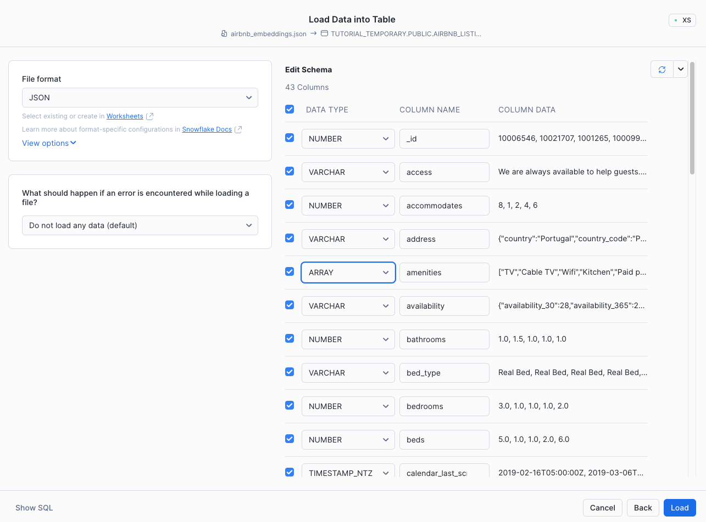
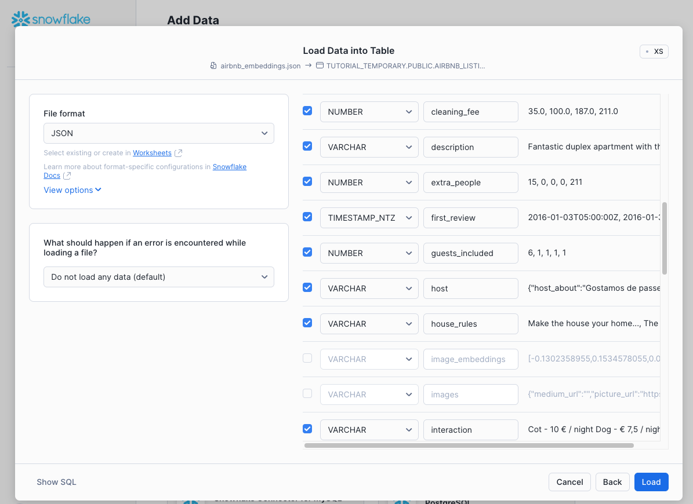

⏱️ Module Overview
Estimated time: 10 minutes
In this module, you'll set up the Snowflake environment for the workshop, including:
- Creating a database and schemas
- Creating a virtual warehouse
- Loading sample data from a public S3 bucket
Step 1: Open a SQL Worksheet
1 Log in to Snowsight
Open your Snowflake account in a browser. You should see the Snowsight interface.
2 Create a New Worksheet
- Click Projects in the left sidebar
- Click Worksheets
- Click the + Worksheet button (or press Cmd/Ctrl + N)
3 Select Your Role
In the top-right of the worksheet, ensure you're using the ACCOUNTADMIN role.
Step 2: Create Database and Warehouse
Copy and paste the following SQL into your worksheet, then click Run All (or press Cmd/Ctrl + Shift + Enter):
-- Set the role to ACCOUNTADMIN
USE ROLE ACCOUNTADMIN;
-- Create the workshop database
CREATE DATABASE IF NOT EXISTS WORKSHOP_DB;
-- Create schemas for organizing our objects
CREATE SCHEMA IF NOT EXISTS WORKSHOP_DB.PUBLIC;
CREATE SCHEMA IF NOT EXISTS WORKSHOP_DB.REVENUE_TIMESERIES;
CREATE SCHEMA IF NOT EXISTS WORKSHOP_DB.AGENTS;
-- Create a virtual warehouse for compute
CREATE OR REPLACE WAREHOUSE WORKSHOP_WH WITH
WAREHOUSE_SIZE = 'X-SMALL'
AUTO_SUSPEND = 120
AUTO_RESUME = TRUE
INITIALLY_SUSPENDED = TRUE;
-- Use the new database and warehouse
USE DATABASE WORKSHOP_DB;
USE WAREHOUSE WORKSHOP_WH;Step 3: Create Stages for Data
Stages are locations where Snowflake can read or write files. We'll create stages for our PDF documents and CSV data.
-- Stage for FOMC PDF documents (internal storage)
CREATE OR REPLACE STAGE WORKSHOP_DB.PUBLIC.FOMC_DOCS
DIRECTORY = (ENABLE = TRUE)
ENCRYPTION = (TYPE = 'SNOWFLAKE_SSE');
-- Stage pointing to public S3 bucket with workshop data
CREATE OR REPLACE STAGE WORKSHOP_DB.PUBLIC.S3_PUBLIC_DATA
URL = 's3://aws-agents-lab-public/';
-- Stage for revenue CSV files
CREATE OR REPLACE STAGE WORKSHOP_DB.REVENUE_TIMESERIES.RAW_DATA
DIRECTORY = (ENABLE = TRUE)
ENCRYPTION = (TYPE = 'SNOWFLAKE_SSE');Step 4: Load the Sample Data
4.1 Load FOMC PDF Documents
These are Federal Reserve meeting minutes that we'll parse with Document AI.
-- Copy PDF files from public S3 to our internal stage
COPY FILES INTO @WORKSHOP_DB.PUBLIC.FOMC_DOCS
FROM @WORKSHOP_DB.PUBLIC.S3_PUBLIC_DATA/fomc/
PATTERN = '.*\.pdf';
-- Verify files were loaded
LIST @WORKSHOP_DB.PUBLIC.FOMC_DOCS;FOMC_Minutes_2024-01-31.pdf,
FOMC_Minutes_2024-03-20.pdf, etc.
4.2 Load Revenue Data
This is structured CSV data we'll query with Cortex Analyst.
-- Copy CSV files to internal stage
COPY FILES INTO @WORKSHOP_DB.REVENUE_TIMESERIES.RAW_DATA
FROM @WORKSHOP_DB.PUBLIC.S3_PUBLIC_DATA/data/
FILES = (
'daily_revenue_combined.csv',
'daily_revenue_by_product_combined.csv',
'daily_revenue_by_region_combined.csv'
);
-- Verify files were loaded
LIST @WORKSHOP_DB.REVENUE_TIMESERIES.RAW_DATA;Step 5: Create and Load Revenue Tables
Create tables to store the revenue data and load the CSV files into them.
USE SCHEMA WORKSHOP_DB.REVENUE_TIMESERIES;
-- Create tables for revenue data
CREATE OR REPLACE TABLE DAILY_REVENUE (
DATE DATE,
REVENUE FLOAT,
COGS FLOAT,
FORECASTED_REVENUE FLOAT
);
CREATE OR REPLACE TABLE DAILY_REVENUE_BY_PRODUCT (
DATE DATE,
PRODUCT_LINE VARCHAR(256),
REVENUE FLOAT,
COGS FLOAT,
FORECASTED_REVENUE FLOAT
);
CREATE OR REPLACE TABLE DAILY_REVENUE_BY_REGION (
DATE DATE,
SALES_REGION VARCHAR(256),
REVENUE FLOAT,
COGS FLOAT,
FORECASTED_REVENUE FLOAT
);
-- Load data from CSV files
COPY INTO DAILY_REVENUE
FROM @RAW_DATA/daily_revenue_combined.csv
FILE_FORMAT = (TYPE = CSV, SKIP_HEADER = 1, FIELD_OPTIONALLY_ENCLOSED_BY = '"');
COPY INTO DAILY_REVENUE_BY_PRODUCT
FROM @RAW_DATA/daily_revenue_by_product_combined.csv
FILE_FORMAT = (TYPE = CSV, SKIP_HEADER = 1, FIELD_OPTIONALLY_ENCLOSED_BY = '"');
COPY INTO DAILY_REVENUE_BY_REGION
FROM @RAW_DATA/daily_revenue_by_region_combined.csv
FILE_FORMAT = (TYPE = CSV, SKIP_HEADER = 1, FIELD_OPTIONALLY_ENCLOSED_BY = '"');Step 6: Verify the Setup
Run these queries to confirm everything is set up correctly:
-- Check row counts
SELECT 'DAILY_REVENUE' AS TABLE_NAME, COUNT(*) AS ROW_COUNT
FROM WORKSHOP_DB.REVENUE_TIMESERIES.DAILY_REVENUE
UNION ALL
SELECT 'DAILY_REVENUE_BY_PRODUCT', COUNT(*)
FROM WORKSHOP_DB.REVENUE_TIMESERIES.DAILY_REVENUE_BY_PRODUCT
UNION ALL
SELECT 'DAILY_REVENUE_BY_REGION', COUNT(*)
FROM WORKSHOP_DB.REVENUE_TIMESERIES.DAILY_REVENUE_BY_REGION;
-- Preview some revenue data
SELECT * FROM WORKSHOP_DB.REVENUE_TIMESERIES.DAILY_REVENUE LIMIT 5;Step 7: Load Additional Data (Optional)
For additional Cortex Search examples, you can load Airbnb listings data using the Snowsight Add Data wizard:
- Download the Airbnb Embeddings JSON from Google Drive
- Navigate to Data → Add Data in Snowsight
- Select Load data into a Table
- Upload the downloaded JSON file
- Configure the file format and column mappings

Column schema configuration when loading JSON data

Selecting columns and data types for the Airbnb listings table
🎉 Module Complete!
You've successfully set up your Snowflake environment with:
- ✅ Database:
WORKSHOP_DB - ✅ Warehouse:
WORKSHOP_WH - ✅ FOMC PDF documents loaded to stage
- ✅ Revenue data loaded into tables
In the next module, we'll parse those PDF documents using Document AI and set up vector search.